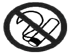
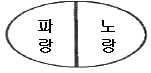
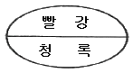
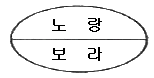
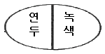
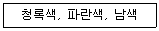

자동차보수도장기능사 (2013-04-14 기출문제)
1과목: 임의 구분
1. 수동변속기 차량에서 플라이 휠의 설명으로 틀린 것은?
- 폭발행정 시 발생한 회전력을 저축하였다가 속도를 일정하게 유지시킨다.
- 관성의 법칙을 이용한 장치이다.
- 링기어는 일체형으로 만들어져 교환을 할 수가 없다.
- 무게는 기관의 회전수와 실린더 수에 관계가 없다.
(정답률: 67%)

2. 속도와 가속도 관계에서 가속도 운동의 내용으로 틀린 것은?
- 10층 건물 옥상에서 떨어뜨린 물체
- 브레이크를 밟아 정지하는 자동차
- 연직 위로 던진 야구공
- 직선도로에서 10m/s의 일정한 속력으로 달리는 자동차
(정답률: 77%)
3. 물질에서 기체, 액체, 고체의 3상이 공존하는 상태를 무엇이라 하는가?
- 임계점
- 3중점
- 포화한계선
- 액화점
(정답률: 89%)
4. 편평 타이어의 특성으로 틀린 것은?
- 눈길에서 체인을 사용하지 않는다.
- 숄더부까지 트레드 패턴이 배열되어 있다.
- 타이어 폭이 넓어 접지성이 좋다.
- 코너링 성능이 향상되어 일반타이어보다 안전하다.
(정답률: 84%)
5. 다음 등식 중에서 틀린 것은?
- 1ℓ = 1000cc
- 1ℓ = 1000㎣
- 1cm3 = 1cc
- 1cm3 = 0.001ℓ
(정답률: 66%)
6. 전기회로에서 옴의 법칙을 틀리게 설명한 것은?
- 저항이 일정할 때 전압이 증가되면 전류도 증가된다.
- 전류가 일정할 때 저항이 증가되면 전압도 증가된다.
- 전압과 저항이 증가되면 전류도 증가된다.
- 전류와 저항이 증가되면 전압도 증가된다.
(정답률: 66%)
7. 차체 모양에 따른 웨건(Wagon)의 종류로 다양성을 활용한 승용차이며 리프트백, 스윙백, 오픈백이라고도 말하는 일명 2박스 카 라고 불리는 세단(Sedan)의 한 종류는?
- 해치백(Hatch Back)세단
- 패스트백(Fast Back)세단
- 플레인백(Plain Back)세단
- 노치백(Notch Back)세단
(정답률: 71%)
8. 바퀴 정렬에서 토인 조정은 무엇으로 하는가?
- 타이로드
- 스트러트 바
- 컨트롤 암
- 스태빌라이저 바
(정답률: 72%)
9. 전자제어 현가장치(ECS)의 기능으로 틀린 것은?
- 주행 조건에 따라 안정된 조향 기능
- 노면 조건에 따라 안티 록 제어 기능
- 주행 조건에 따라 감쇠력 제어 기능
- 노면 조건에 따라 차고 조정 기능
(정답률: 65%)
10. 전자제어 제동장치(ABS)의 기능으로 틀린 것은?
- 방향 안정성 확보
- 조향성 확보
- 차륜의 신속한 고착 유지
- 슬립율에 의한 최적의 제동거리 실현
(정답률: 72%)
11. 도막의 벗겨짐(peeling)현상의 발생 요인은?
- 용제의 용해력이 충분할 때
- 마스킹테이프를 즉시 떼어냈을 때
- 도료와 강판의 친화력이 좋을 때
- 구 도막 표면의 연마가 미흡할 때
(정답률: 82%)
12. 다음 중 도장할 장소에 의한 분류에 해당되지 않는 것은?
- 내부용 도료
- 하도용 도료
- 바닥용 도료
- 지붕용 도료
(정답률: 67%)
13. 도료를 혼합했을 대 일어나는 현상은?
- 명도는 높아지고, 채도는 낮아진다.
- 명도는 낮아지고, 채도는 높아진다.
- 명도, 채도가 모두 높아진다.
- 명도, 채도가 모두 낮아진다.
(정답률: 58%)
14. 자동차에서 사용되는 플라스틱 소재의 특성에 대한 설명이 아닌 것은?
- 금속보다 무게가 가볍다.
- 내식성이 우수하다.
- 저온에서도 열변형이 발생한다.
- 유기용제에 나쁜 영향을 받는다.
(정답률: 70%)
15. 퍼티도포용 주걱(스푼)으로 부적합한 것은?
- 나무주걱
- 고무주걱
- 플라스틱주걱
- 함석주걱
(정답률: 79%)
16. 도료 저장 중(도장 전) 발생하는 겔(gel)화 결함으로 방지대책 및 조치사항을 설명하였다. 바르지 못한 것은?
- 도료 저장시 도료 뚜껑을 완전히 닫은 후 20℃ 이하 실내에 보관한다.
- 장기간 저장한 것은 사용하지 않아야 한다.
- 피도면의 충분한 세정 및 탈지 작업을 한다.
- 결함 상태가 약한 것은 굳은 부분을 제거 후 희석제로 잘 희석하여 사용한다.
(정답률: 58%)
17. 수용성 도료 작업 시 사용하는 도장 보조 재료와 관련된 설명이다. 옳지 않은 것은?
- 마스킹 종이는 물을 흡수하지 않아야 한다.
- 도료 여과지는 물에 녹지 않는 재질이어야 한다.
- 마스킹용으로 비닐 재질을 사용할 수 있다.
- 도료 보관 용기는 금속 재질을 사용한다.
(정답률: 75%)
18. 상도 도장 전 준비 작업으로 틀린 것은?
- 폴리셔 준비
- 작업자 준비
- 도료 준비
- 피도물 준비
(정답률: 70%)
19. 프라이머-서페이서를 분무하기 전에 퍼티의 단차, 에지(edge)면의 불량부분이 발견되었을 경우 적용할 가장 적절한 연마지는?
- P16~P40
- P60~P80
- P80~P320
- P400~P600
(정답률: 65%)
20. 도장 작업 중에 발생되는 도료분진이 포함된 공기를 여과하여 배출하거나 또는 작업장에 깨끗한 공기를 공급하도록 되어있는 도장시설물은?
- 스프레이 부스(Spray Booth)
- 에어 크리너(Air Cleaner)
- 에어 트랜스포머(Air Transformer)
- 에어 건조기(Air Dryer)
(정답률: 63%)
2과목: 임의 구분
21. 도막의 경도를 측정하는 기기가 아닌 것은?
- 클레멘 스크레치 경도계(Clemen scratch tester)
- 연필 스크레치 경도계(Pencil scratch tester)
- 크로스 컷 경도계(Cross cut tester)
- 스워드 로커 경도계(Sward rocker hardness)
(정답률: 64%)
22. 도장 중 주름(lifting, wrinkling)현상이 발생되었다. 그 원인으로 틀린 것은?
- 연마주변의 도막이 약한 곳에 용제가 침해하였다.
- 작업할 바탕도막에 미세한 균열이 있다.
- 건조가 불충분하고 도장계통이 다른 도막에 작업을 하였다.
- 2액형의 프라이머 서페이셔를 사용하였다.
(정답률: 81%)
23. PP(폴리프로필렌) 재질이 소재인 범퍼의 경우 플라스틱 프라이머로 도장 해야만 하는데 그 이유로 맞는 것은?
- 녹슬지 않게 하기 위해서
- 부착력을 좋게 하기 위해서
- 범퍼에 유연성을 주기 위해서
- 플라스틱의 변형을 막기 위해서
(정답률: 60%)
24. 메탈릭 도료 조색시 유색안료를 혼합하면 할수록 어떤 현상이 일어나게 되는가?
- 명도와 채도가 높아진다.
- 명도는 낮아지고 채도는 높아진다.
- 명도와 채도가 낮아진다.
- 명도는 높아지고 채도는 낮아진다.
(정답률: 45%)
25. 솔리드 색상의 도장작업에 대한 설명으로 잘못된 것은?
- 도막의 색상은 시간이 갈수록 조금씩 변한다.
- 2액형 우레탄 주제로 조색하고, 경화제를 혼합하면 색상은 조금 엷어진다.
- 베이스 타입으로 도장하고 투명을 도장하면 색상이 선명하고 진해진다.
- 솔리드색상 도장은 건조 전과 전조 후의 색상에 변화는 없다.
(정답률: 78%)
26. 불휘발분을 뜻하며 규정된 시험조건에 따라 증발시켜 얻어진 물질의 무게를 나타내는 것은?
- 점도
- 희석비
- 고형분(NV)
- 휘발성 유기 화합물(VOC)
(정답률: 65%)
27. 아크릴 우레탄 도료를 강제 건조 시 도막 건조 온도로 적당한 것은?
- 20℃~30℃/20분~30분
- 30℃~40℃/20분~30분
- 40℃~50℃/20분~30분
- 60℃~70℃/20분~30분
(정답률: 65%)
28. 자동차도장 색상차이의 원인 중 현장 조색시스템 관리 도료대리점의 원인으로 맞는 것은?
- 색상 혼합을 잘못했을 때
- 표준색과 상이한 도료의 출고
- 도막이 너무 두껍거나 얇은 경우
- 신차도료의 납품업체가 변경된 경우
(정답률: 42%)
29. 오염 물질의 영향으로 발생된 분화구형 결함을 무엇이라 하는가?
- 크레터링
- 주름
- 쵸킹
- 크레이징
(정답률: 82%)
30. 플라스틱 부품의 보수 도장에 대한 문제점 중 틀린 것은?
- 열경화성플라스틱(PUR)은 부착성이 우수하나 이형제 제거를 위해 표면조정 작업이 필요하다.
- 폴리카보네이트(PC)부품은 내용제성이 취약하여 도료 선정 시 주의가 필요하다.
- 폴리프로필렌(PP)부품은 부착성이 양호하다.
- 폴리프로필렌(PP)부품은 전용 프라이머를 사용한다.
(정답률: 58%)
31. 3코트 펄 조색시 컬러베이스의 건조가 불충분할 때 나타나는 현상은?
- 색상얼룩과 같은 이색현상이 심해진다.
- 광택성이 저하되며 도료가 흘러내린다.
- 연마자국이 나타난다.
- 펄 입자의 배열이 균일하다.
(정답률: 46%)
32. 워시프라이머 도장 후 점검사항으로 옳지 않은 것은?
- 구도막에 도장되어 있지 않은가?
- 균일하게 분무하였는가?
- 두껍게 도장하지 않았는가?
- 거친 연마자국이 있는가?
(정답률: 61%)
33. 다음 중 광택장비 및 기구가 아닌 것은?
- 실링건
- 샌더기
- 폴리셔
- 버프 및 패드
(정답률: 64%)
34. 자동차 보수도장 용제 중 저비점인 것은?
- 메틸이소부틸케톤
- 아세톤
- 크실렌
- 초산아밀
(정답률: 71%)
35. 조색된 색상을 비교할 때 틀린 설명은?
- 조색의 시편은 10 × 20cm가 적당하다.
- 광원을 안고, 등지고, 정면에서 비교한다.
- 색을 관찰하는 각도는 정면, 15°, 45° 이다.
- 색상은 햇빛이 강한 곳에서 비교한다.
(정답률: 75%)
36. 다음 설명 중 옳은 것은?
- P400 연마지로 금속 면과의 경계부를 경사지게 샌딩한다.
- 연마지 방수는 고운 것에서 거친 것 순서로 한다.
- 단 낮추기의 폭은 1(cm) 정도가 적당하다.
- 샌딩 작업에 의해 노출된 철판면은 인산아연피막처리제로 방청처리 한다.
(정답률: 71%)
37. 승용, 승합차의 보수도장에 적합한 스프레이건끼리 짝지어 진 것은?
- 중력식, 정전식
- 흡상식, 압송식
- 중력식, 흡상식
- 중력식, 압송식
(정답률: 59%)
38. 습식연마의 장점이 아닌 것은?
- 건식연마에 비하면 페이퍼의 사용량이 절약된다.
- 연마 중 분진발생이 없다.
- 수 연마용 샌더를 사용하면 손 연마에 비하여 작업이 빠르다.
- 거칠기가 같은 페이퍼를 사용 할 때 건식연마보다 연마면이 탁월하다.
(정답률: 49%)
39. 마이크로미터의 취급시 안전사항이 아닌 것은?
- 사용 중 떨어뜨리거나 큰 충격을 주지 않도록 한다.
- 온도변화가 심하지 않은 곳에 보관한다.
- 앤빌과 스핀들을 접촉되어 있는 상태로 보관한다.
- 눈금은 시차를 작게 하기 위해서 수직위치에서 읽는다.
(정답률: 80%)
40. 안전·보건표지의 종류와 형태에서 다음 그림이 나타내는 것은?

- 인화성물질경고
- 폭발성물질경고
- 금연
- 화기금지
(정답률: 87%)
3과목: 임의 구분
41. 실린더 헤드 볼트를 조일 때 회전력을 측정하기 위해 사용되는 공구는?
- 토크 렌치
- 오픈 엔드 렌치
- 복스 렌치
- 소켓 렌치
(정답률: 82%)
42. 드릴머신으로 탭 작업을 할 때 탭이 부러지는 원인이 아닌 것은?
- 탭의 경도가 소재보다 높을 때
- 구멍이 똑 바르지 아니할 때
- 구멍 밑바닥에 탭 끝이 닿을 때
- 레버에 과도한 힘을 주어 이동할 때
(정답률: 66%)
43. 연 근로시간 1000시간 중에 발생한 재해로 인하여 손실된 일수로 나타낸 것은?
- 연 천인율
- 강도율
- 도수율
- 손실률
(정답률: 59%)
44. 공구의 안전한 취급 방법 중 틀린 것은?
- 스프레이건의 도료 분무시 방향이 다른 작업자의 인체를 향하지 않도록 한다.
- 사용한 공구는 청결하게 세정하여 현장의 작업장 바닥에 둔다.
- 작업 종료시에는 반드시 공구의 개수나 파손의 유무를 점검하여 다음날 작업에 지장이 없도록 한다.
- 전기 공구를 사용하는 경우 항상 손에 물기를 제거하고 사용한다.
(정답률: 91%)
45. 유기용제의 영향으로 인체에 나타나는 현상 중 기관지 장애를 일으키는 용제는?
- 톨루엔
- 메틸알코올
- 부틸아세테이트
- 메틸이소부틸케톤
(정답률: 57%)
46. 도장설비에서 화재의 발화 원인으로 틀린 것은?
- 도료 가스등의 산화열에 의한 자연발화
- 용제등 취급중의 정전기 발화
- 도료 가스등과 회전부분과의 마찰열에 의한 발생
- 도료 사용방법 미숙
(정답률: 78%)
47. 도장 위험물 보관에 대한 설명으로 바르지 못한 것은?
- 화재나 폭발의 방지에 충분한 주의가 필요하다.
- 가연물은 안전한 장소를 선택하여 보관한다.
- 용제나 도료 등의 재료를 취급하는 곳에는 소화기가 필요하지 않다.
- 사용 후의 천(헝겊)이나 잔류도료, 도료용기 등의 처리에 주의가 필요하다.
(정답률: 85%)
48. 스프레이부스 설치 목적에 대한 설명 중 가장 거리가 먼 것은?
- 환경의 보호
- 도료의 절감
- 작업자의 건강 유지
- 도료 및 용제의 인화에 의한 재해방지
(정답률: 81%)
49. 색에 대한 지각의 순서로 옳은 것은?
- 동공→전안방→각막→수정체→초자체→망막
- 각막→전안방→동공→수정체→초자체→망막
- 각막→전안방→동공→초자체→수정체→망막
- 동공→전안방→각막→초자체→수정체→망막
(정답률: 62%)
50. 먼셀의 색상환 중 다섯 가지 주요 색상으로 옳은 것은?
- 빨강, 노랑, 청록, 파랑, 주황
- 빨강, 노랑, 연두, 파랑, 남색
- 빨강, 노랑, 청록, 파랑, 자주
- 빨강, 노랑, 초록, 파랑, 보라
(정답률: 79%)
51. 색상 거리가 가까우며, 오래 보고 있어도 피로하지 않은 색채 배색은?




(정답률: 88%)
52. 다음 중 한 색상 중에서 가장 채도가 높은 색을 무엇이라 하는가?
- 탁색
- 순색
- 명청색
- 암탁색
(정답률: 68%)
53. 다음 중 주목성이 가장 강한 색은?
- 주황색
- 보라색
- 파란색
- 검정색
(정답률: 72%)
54. 다음 중 색채가 주는 감정효과를 맞게 표현한 것은?
- 색의 한남감은 색상에 의한 효과가 가장 강하다.
- 색의 중량감은 채도에 의한 효과가 가장 강하다.
- 색의 화려함은 명도의 효과가 가장 크다.
- 색의 강한 느낌과 부드러운 느낌은 색상의 효과가 가장 크다.
(정답률: 46%)
55. 색의 대비현상에 대한 일반적인 설명이다. 가장 옳은 것은?
- 보색대비 – 유채색이 무채색과 인접될 때 무채색은 유채색의 보색 기미가 있는 듯이 보인다.
- 색상대비 – 배열된 원색들은 인근 유사색의 영향으로 자기 고유색상이 감추어지는 경향이 있다.
- 면적대비 – 옷감을 고를 때 작은 견본에 비하여 옷이 완성되면 색상이 흐릿해졌다.
- 채도대비 – 의상디자인에서 무채색을 적절히 활용하면 동적인 이미지를 연출할 수 있다.
(정답률: 48%)
56. 저채도의 탁한 주황색을 만들기 위한 가장 좋은 방법은?
- 주황에 흰색을 섞는다.
- 빨강과 노랑에 녹색을 섞는다.
- 빨강과 노랑에 회색을 섞는다.
- 빨강과 노랑에 흰색을 섞는다.
(정답률: 78%)
57. 다음 중 감법혼색의 3원색이 아닌 색은?
- Magenta
- Green
- Yellow
- Cyan
(정답률: 78%)
58. 박명시에 관한 설명으로 옳은 것은?
- 감도는 407~455nm인 상태가 된다.
- 간상체(night vision)라고도 한다.
- 색을 정확히 판단할 수 있다.
- 추상체와 간상체가 동시에 활동한다.
(정답률: 58%)
59. 여러 가지 많은 색 점들이 동시적으로 나열되어 있는 경우에 일어나는 혼색은?
- 가산혼합
- 계시가법혼색
- 병치혼합
- 감산혼합
(정답률: 72%)
60. 다음 색과 가장 거리가 먼 느낌은?

- 진출하는 느낌
- 시원한 느낌
- 안정된 느낌
- 조용한 느낌
(정답률: 66%)